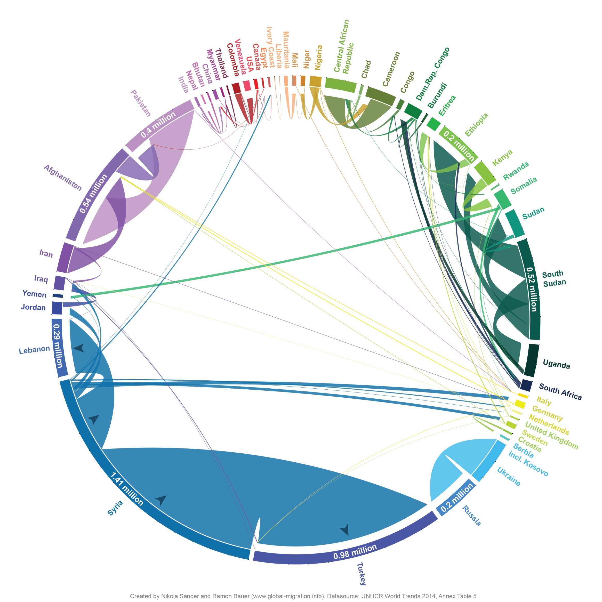
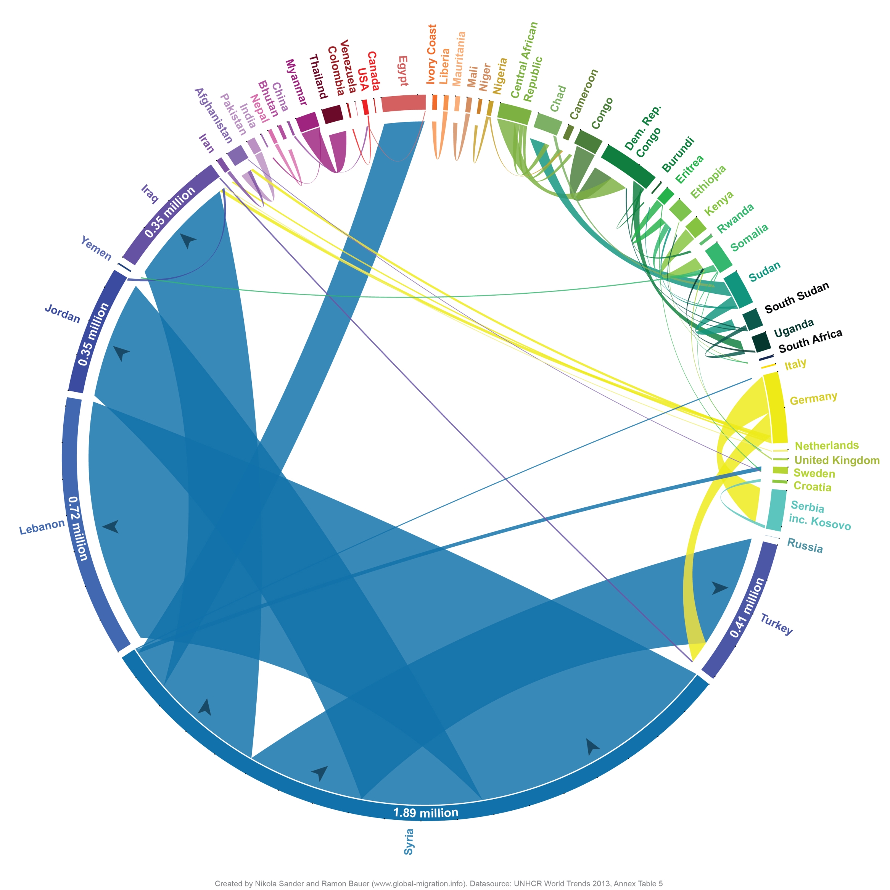

The number of refugees around the world is on the rise. The latest figures released by the UNHCR this week suggest that 19.5 million refugees lived outside their home countries at the end of 2014. Óf those, an estimated 2.9 million people have sought refuge in another country in 2014.
The surge of people risking their lives to cross the Mediterranean has brought international attention to refugee flows in recent months. Public anxiety about a looming European migration crisis caused by large uncontrolled inflows from Africa and the Middle East is growing. But is Europe really the main destination for refugees around the globe? And how big are refugee flows compared to overall levels of international migration?
This visualisation published in The New York Times on 20 June 2015 uses traditional flow maps to illustrate the global pattern of refugee movements. We re-designed their visualisation using the same UNHCR data to show the key senders and receivers of refugees in the world in a circular layout.
Click on a segment of the circle to explore refugee flows between individual countries. Only flows of at least 1,000 refugees are shown. Check out The Global Flow of People to compare refugee flows to overall levels of migration.
The Global Flow of Refugees in 2014
The Global Flow of Refugees in 2013
